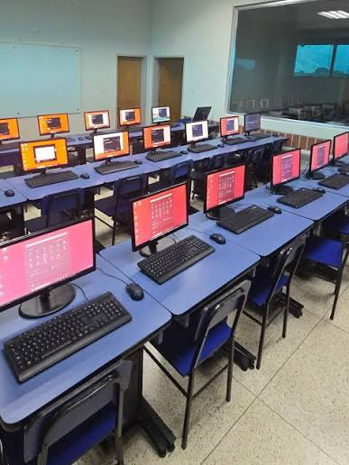
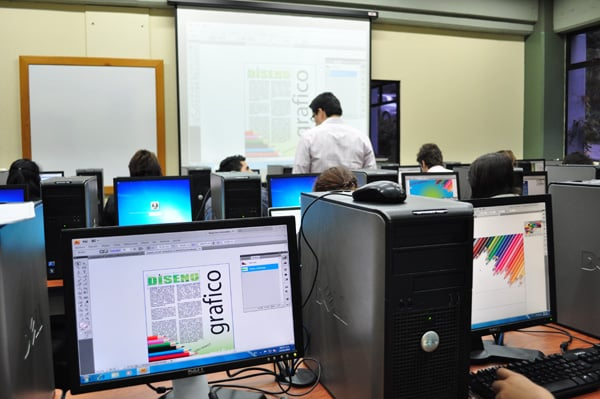

id="contenido">
Galería


Imagen de la galería de un laboratorio de informatica
Imagen de la galería de un laboratorio de informatica
id="audio">
Audio de bienvenida
audio controls>
Tu navegador no soporta el elemento de audio.
Volver al inicio de la página